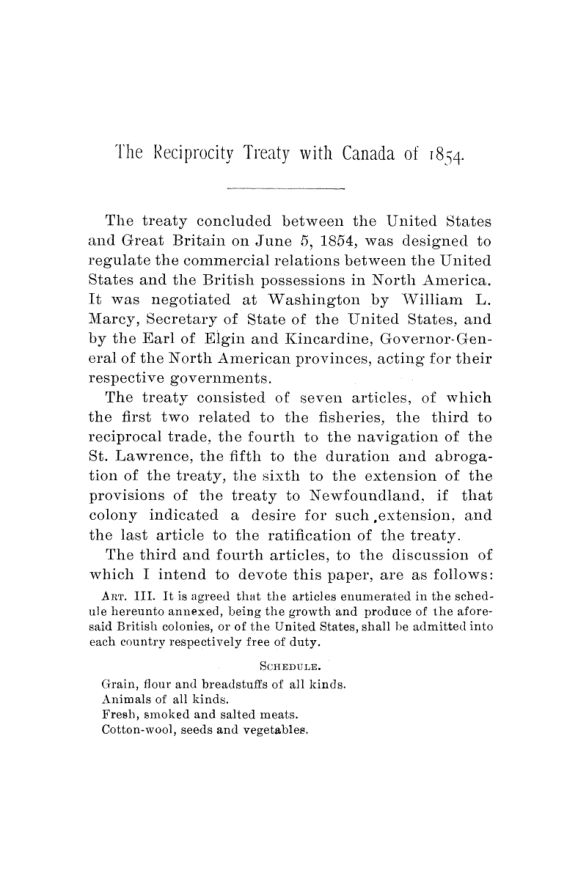

Haynes, 1892: o acordo com o Canadá que a política derrubou
Leitura: 12 min
Em 1854, EUA e Canadá zeraram tarifas sobre produtos naturais e o comércio deu um salto. Em 1892, Haynes mostrou que o tratado caiu por ressentimento político, não por fracasso econômico.


Perto da meia-noite de 5 de junho de 1854, em Washington, quatro homens conferiam três cópias manuscritas de um tratado à luz de seis velas de cera. Um deles era William L. Marcy, secretário de Estado dos Estados Unidos. Outro era o conde de Elgin, governador-geral das províncias britânicas da América do Norte. O relógio bateu as doze badaladas antes da assinatura, e por um momento ninguém soube se o documento levaria a data de hoje ou de ontem. A cena está numa carta de Lawrence Oliphant, secretário de Elgin, escrita à mãe dois dias depois.
Frederick E. Haynes, doutor (Ph. D.), resgata a carta em The Reciprocity Treaty with Canada of 1854, monografia publicada em novembro de 1892 nas Publications of the American Economic Association. O tratado tinha sete artigos. Haynes se concentra em dois. O terceiro isentava de tarifa, nos dois sentidos da fronteira, uma lista de produtos naturais: grãos e farinha, animais, carnes, peixe, madeira, carvão, minérios, lã, couros, manteiga e queijo. O quarto abria aos americanos o rio São Lourenço e os canais do Canadá; em troca, os súditos britânicos poderiam navegar no lago Michigan.
Por que o Canadá queria tanto o acordo?
Antes de 1845, um sistema de tarifas diferenciais favorecia os produtos britânicos a ponto de impedir qualquer comércio relevante com os Estados Unidos. Em 1845, Londres autorizou o legislativo canadense a fixar a própria tarifa. Em 1847, o Canadá eliminou a discriminação e passou a admitir os bens americanos nas mesmas condições dos britânicos. Haynes liga a mudança à virada liberal inglesa, com a abolição das Corn Laws, as leis protecionistas sobre cereais, em 1846, e a revogação das Leis de Navegação em 1849.
Havia também um motivo político. Os canadenses viam com descontentamento crescente a riqueza acumulada pelo vizinho, e a ideia de anexação aos Estados Unidos ganhava adeptos. Em cartas de 1849, Elgin advertia Londres de que, sem comércio recíproco e livre navegação, o horizonte era de agitação, convulsão ou anexação. O acordo comercial era, para ele, um instrumento de estabilidade colonial.
A via escolhida no início foi a legislação concorrente: cada país aprovaria leis espelhadas. Em 1848, um projeto passou na Câmara dos Representantes sem oposição, mas o Senado não chegou a votá-lo, por excesso de outros assuntos. O impasse se repetiu na sessão seguinte. Depois de 1851, ninguém tentou seriamente esse caminho. A disputa sobre as pescas no litoral nordeste, herdada da convenção de 1818, acabou estendendo a negociação a todas as províncias britânicas e empurrou o tema para um tratado.
Um tratado aprovado com champanhe?
Quando Elgin chegou a Washington, em 1854, o presidente Pierce e Marcy foram francos: era inútil, porque os democratas, que tinham maioria no Senado, se opunham. Seguiram-se cerca de dez dias de jantares e recepções. Oliphant conta que, a certa altura, comentou com o chefe que todos os seus amigos mais próximos eram senadores democratas. Elgin respondeu, seco, que os dele também. Ao fim da temporada social, Elgin avisou Marcy de que havia maioria no Senado. Marcy mal acreditou. Os detalhes foram fechados em três dias.
Os inimigos de Elgin na Inglaterra e nas províncias disseram que o tratado fora comprado com ouro britânico. Os adversários americanos preferiam outra imagem:
“Passou flutuando em champanhe” (“floated through on champagne”)
Haynes não encontra indício de suborno, mas considera a segunda acusação bem fundada; o próprio Oliphant admitiu que, nas mãos de um diplomata hábil, a bebida tem seu valor. A ressalva do autor é importante: as tentativas desde 1846 mostram que havia um movimento consistente por trás do acordo. O Congresso aprovou a lei de execução em 5 de agosto de 1854, e o tratado vigorou a partir da proclamação presidencial de 16 de março de 1855. Nas legislaturas coloniais, houve apenas 21 votos contrários.
Quanto o comércio realmente cresceu?
Antes dos números, Haynes faz três advertências. As estatísticas não são exatas. O tratado era só uma entre várias forças: crescimento da população, canais, ferrovias e a expansão da indústria agiam sobre o comércio como nunca antes. E o período foi perturbado pela crise de 1857 e pela Guerra Civil de 1861 a 1865. Feita a ressalva, a série longa impressiona: o comércio total entre os Estados Unidos e as províncias britânicas passou de US$ 2,5 milhões em 1821 para US$ 88,2 milhões em 1885.
A década de 1851 a 1861, que inclui os primeiros anos do tratado, teve o maior aumento de toda a série até 1881: US$ 31,7 milhões. A de 1861 a 1871, que cobre a guerra e a revogação, teve o menor desde a década de 1830, de US$ 8,5 milhões.
A composição mudou tanto quanto o volume. As importações americanas isentas de tarifa vindas das províncias somavam US$ 787.599 em 1850 e chegaram a US$ 23,2 milhões em 1860. As sujeitas a tarifa caíram de US$ 6,1 milhões em 1853 para US$ 529.258 em 1862. Do lado canadense, as importações livres vindas dos Estados Unidos subiram para US$ 19,0 milhões em 1862, enquanto as tarifadas ficaram praticamente estáveis, em torno de US$ 6 milhões.
Os produtos agrícolas lideravam nos dois sentidos. Somados cevada e aveia, os grãos seriam o maior item de importação dos dois países. A cevada vendida aos Estados Unidos passou de US$ 1,1 milhão em 1862 para US$ 4,1 milhões em 1865. Haynes registra o motivo com naturalidade: a cevada canadense era a melhor para fazer cerveja. O argumento dos protecionistas, de que dois países com os mesmos produtos não teriam o que trocar, não resistia aos dados.
Um dado do fim do tratado reforça o ponto. Em 1866, os Estados Unidos importaram US$ 48,5 milhões das províncias, num ano fiscal em que o tratado vigorou menos de nove meses. Haynes vê ali a pressa dos comerciantes em aproveitar o fim da isenção. O valor só voltou a ser alcançado em 1882. Em nota, ele registra uma explicação adicional sugerida pelo professor Taussig: os preços altos nos Estados Unidos, inflados pelo papel-moeda da guerra.
Depois da revogação, o comércio não desabou e já se recuperava antes do tratado de 1871. Haynes levanta a hipótese de que o acordo de 1854 criou correntes de troca que sobreviveram a ele. Cita também um relatório de 1871 sobre o que chamou de comércio de conveniência: trocas de quantidades quase iguais de cereais, farinha e carvão, explicadas por economia de frete e diferença de qualidade, e não por necessidade. Pelo menos um terço do comércio teria esse caráter. Em 1889, o comércio do Canadá com os Estados Unidos já superava o de qualquer outro parceiro, inclusive a Grã-Bretanha.
Onde o tratado falhou?
A falha estava no que ficou de fora. O tratado cobria quase só produtos naturais e deixava as manufaturas onde estavam. O Canadá precisava de receita para canais e ferrovias, financiados por subsídios e títulos municipais, e só podia elevar tarifas sobre o que não constava da lista. Foi o que fez, ano após ano. Entre 1855 e 1859, a tarifa sobre arreios subiu de 12% para 25%; tecidos de algodão, ferro, seda e lã chegaram a 20%; o açúcar refinado, a 40%.
Haynes relativiza a queixa americana. Mesmo pela tarifa de 1857, os Estados Unidos cobravam 24% sobre tecidos de algodão e lã, 4 pontos acima da tarifa canadense de 1859. E nenhuma cláusula proibia o Canadá de subir tarifas sobre outros bens. Os americanos alegavam um entendimento tácito de que a tarifa canadense ficaria como estava, mas ele nunca foi escrito. Nenhuma das partes apresentou queixa formal de violação.
A navegação dos canais também decepcionou. O Canadá esperava desviar para o São Lourenço o grão do Oeste americano que seguia pelo canal do Erie, em Nova York. Aboliu os pedágios nos canais do São Lourenço em 1860 e reduziu os do canal de Welland. Ainda assim, a parcela dos cereais americanos que descia o São Lourenço foi de 7,3% em 1856 a um pico de 16,08% em 1859 e voltou a 11,04% em 1862. O próprio ministro das Finanças canadense culpava a pouca concorrência entre transportadores, os laços dos embarcadores com o capital de Nova York e os fretes mais baratos de Nova York para a Europa. Haynes acrescenta o inverno: rios e canais canadenses ficavam congelados boa parte do ano.
Por que, então, foi revogado?
Em 13 de dezembro de 1864, a Câmara aprovou por 85 votos a 57 uma resolução para encerrar o tratado. O Senado a enviou à comissão de relações exteriores, e não à de comércio, e a transformou em revogação incondicional em 12 de janeiro de 1865. Para Haynes, o detalhe processual revela tudo: o Senado tratou o tema como questão política. O presidente aprovou a medida em 18 de janeiro de 1865, e o tratado terminou em 17 de março de 1866. O senador Charles Sumner, a favor da revogação, contestou a relação entre o acordo e o comércio:
“Post hoc ergo propter hoc é uma regra frouxa demais para o nosso governo” (“Post hoc ergo propter hoc is too loose a rule for our government”)
Sumner tinha razão no método, como o próprio Haynes reconhece nas três ressalvas iniciais. Mas o autor nota que a oposição se contentou em denunciar o tratado e atacar a política britânica, enquanto os argumentos sólidos estavam com os defensores. A crítica de mérito mais séria veio de Hannibal Hamlin, adversário moderado, numa convenção comercial em Detroit em julho de 1865. Ele se dizia defensor do livre-comércio, mas não de um sistema que isenta poucos artigos e obriga a cobrar mais dos outros para cobrir a receita perdida:
“Isso é livre-comércio em fatias” (“That is free trade in slices”)
O resto da evidência aponta para a política. Charles Francis Adams, ministro americano em Londres, escreveu em fevereiro de 1865 que a revogação resultava mais de forte sentimento político do que de considerações comerciais. A convenção de Detroit, que reuniu juntas comerciais e câmaras de comércio dos dois lados da fronteira, pediu por unanimidade substancial um novo acordo. Delegados de Canadá, Nova Brunswick e Nova Escócia passaram de 24 de janeiro a 6 de fevereiro de 1866 em Washington tentando renová-lo, sem sucesso. A conclusão de Haynes é que a causa foi política, e não econômica: a hostilidade inglesa ao Norte durante a Guerra Civil despertou um ressentimento que nenhum argumento comercial venceria.
Haynes fecha com uma moldura maior. Entre 1846 e 1870, as principais nações caminharam para reduzir barreiras ao comércio: as Corn Laws caíram na Inglaterra, o Zollverein, a união aduaneira alemã, se expandiu, multiplicaram-se tratados comerciais, e os Estados Unidos baixaram tarifas em 1846 e 1857. A Guerra Civil e a Guerra Franco-Prussiana interromperam esse movimento. Os Estados Unidos precisavam de receita para a guerra e para a dívida; a Europa, de receita para exércitos. Com o fim da onda liberal, diz ele, foram-se as melhores esperanças de relações comerciais melhores com as províncias britânicas.
Na minha leitura
Na minha leitura, o estudo de Haynes ensina que um acordo comercial pode dar certo nos números e ainda assim morrer na política. O tratado de 1854 entregou o que prometia: o comércio de produtos naturais cresceu e, ao que tudo indica, parte dele sobreviveu à revogação. O que o derrubou foi a combinação de um desenho incompleto, que deixou as manufaturas e a tarifa canadense fora das regras, com um choque de ressentimento que transformou uma questão de comércio em questão de lealdade. Quando o tema muda de comissão, muda de natureza.
A crítica de Hamlin merece ser levada a sério, mesmo por quem defende a abertura. Liberar apenas uma lista de produtos protege os setores escolhidos, empurra a receita perdida para outros e deixa à outra parte uma margem que ela usará. O tratado não proibia a alta das tarifas sobre o que ficou de fora, e o Canadá a usou para financiar seus canais. A lição prática é antiga: em acordo comercial, o que não está escrito não existe, e o que fica de fora costuma ser exatamente onde o conflito vai aparecer.
Glossário
- Reciprocidade
- acordo em que dois países concedem um ao outro as mesmas reduções ou isenções de tarifa sobre uma lista de produtos.
- Tarifa diferencial
- imposto de importação mais alto para bens de certa origem, usado para favorecer um parceiro, como a metrópole.
- Legislação concorrente
- leis espelhadas aprovadas separadamente por cada país, como alternativa a um tratado.
- Corn Laws
- leis britânicas que protegiam os cereais nacionais com tarifas de importação; abolidas em 1846.
- Comércio de conveniência
- troca de mercadorias semelhantes entre vizinhos, explicada por frete mais barato ou diferença de qualidade.
- Revogação (abrogation)
- encerramento de um tratado por decisão de uma das partes, conforme as regras previstas nele.
- Zollverein
- união aduaneira dos Estados alemães no século XIX.
- Post hoc ergo propter hoc
- falácia de supor que, se B veio depois de A, então A causou B.
Fontes
- The Reciprocity Treaty with Canada of 1854 (pp. 7–70). JSTOR · Internet Archive (PDF)
- Sumário da edição no JSTOR: Publications of the American Economic Association, vol. 7, nº 6.
Documento em domínio público (EUA, publicado antes de 1931), via JSTOR Early Journal Content e Internet Archive. Resumo e comentário do autor deste site, sem afiliação com a American Economic Association. Encontrou um erro? Escreva: a correção é publicada no próprio texto, com data.
← Nº 34 · Ross, 1892: o fundo que prometia pagar a dívida sozinho Nº 36 · Chautauqua, 1892: a nova economia, o fisco e o agricultor →